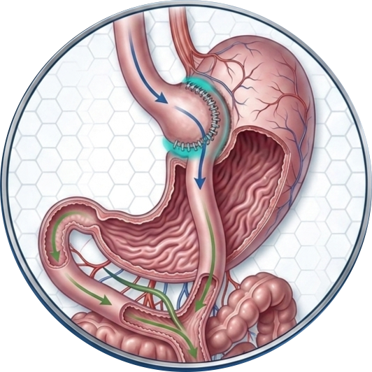
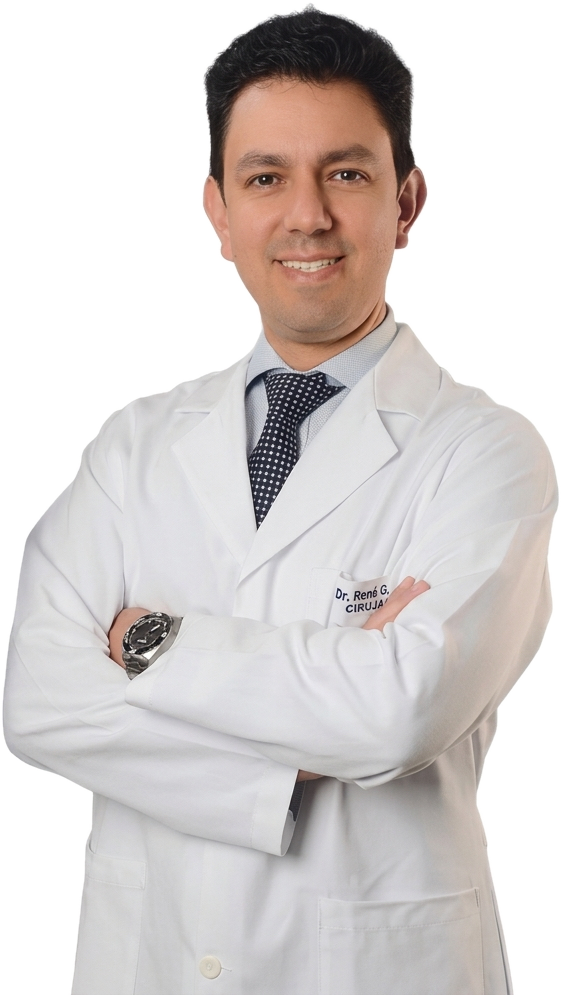
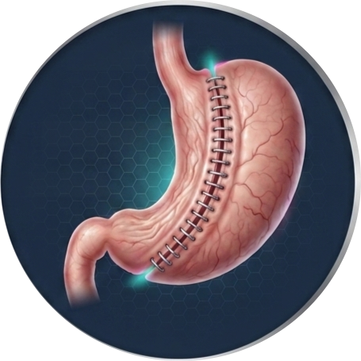
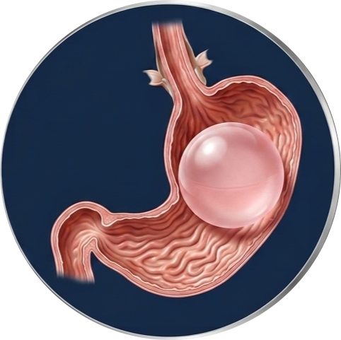
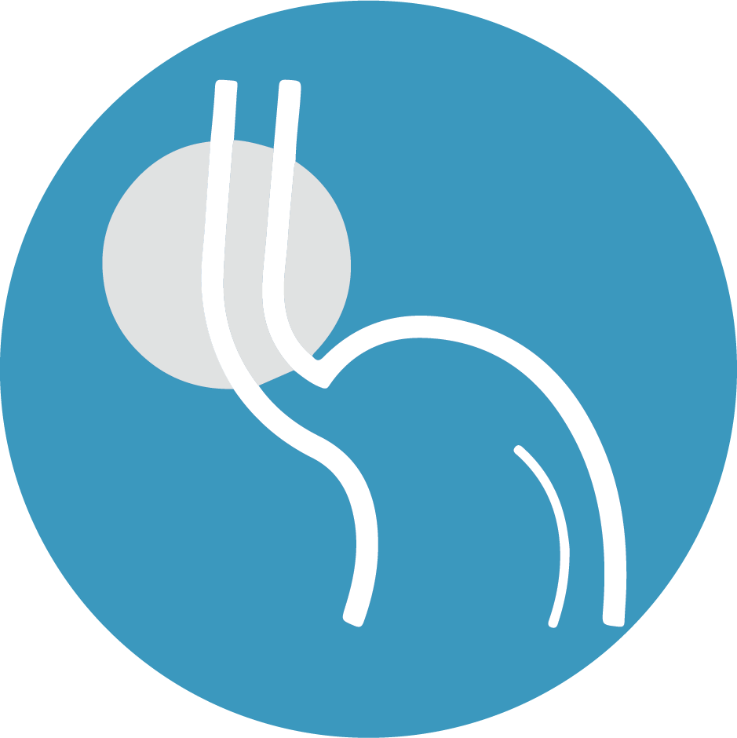

Bypass gástrico
El procedimiento de referencia cuando hay obesidad con diabetes tipo 2 o hipertensión. Consigue la remisión de la diabetes en la mayoría de los pacientes.
Ver en qué consiste →Cirugía bariátrica y metabólica · Ibarra, Ecuador
Bypass gástrico, manga gástrica y balón intragástrico con técnica laparoscópica avanzada. Realizados por un cirujano miembro del Colegio Americano de Cirujanos, aquí en Ibarra.

Procedimientos
No todos necesitan la misma operación. En la valoración definimos cuál corresponde según tu índice de masa corporal, tus enfermedades asociadas y tu historia.

El procedimiento de referencia cuando hay obesidad con diabetes tipo 2 o hipertensión. Consigue la remisión de la diabetes en la mayoría de los pacientes.
Ver en qué consiste →
Hasta un 70% del exceso de peso, con una intervención de menos de una hora y bajo riesgo. La mejor relación entre resultado, seguridad y recuperación.
Ver en qué consiste →
Alternativa endoscópica, sin incisiones, para quienes necesitan bajar peso antes de otra cirugía o no son candidatos a un procedimiento mayor.
Ver en qué consiste →Extirpación de la tiroides sin marca visible en el cuello. El Dr. Gordillo realizó la primera serie de casos documentada de esta técnica en el país.
Ver en qué consiste →
Los medicamentos alivian los síntomas, pero no corrigen la causa. La cirugía repara la hernia y devuelve la función normal al esfínter esofágico.
Ver en qué consiste →Citorreducción con quimioterapia intraperitoneal para cáncer avanzado de colon, estómago y ovario. Realizada por primera vez en Ibarra por el Dr. Gordillo.
Ver en qué consiste →El cirujano
«La cirugía es una parte del tratamiento, no todo el tratamiento.»
El Dr. René Gordillo ha traído a Ibarra técnicas que antes obligaban a viajar a Quito o Guayaquil: cirugía metabólica avanzada, tiroidectomía endoscópica y citorreducción con HIPEC.
Cómo funciona
Revisamos tu historia clínica, IMC y enfermedades asociadas para definir si eres candidato y a qué procedimiento.
Exámenes de laboratorio, endoscopia y valoración del equipo. Preparamos la cirugía con seguridad.
Procedimiento laparoscópico en Nova Clínica Moderna, con uno a dos días de hospitalización.
Controles y plan nutricional durante el primer año para que el resultado se mantenga.
Pacientes
Llevaba años con diabetes y medicación diaria. Ocho meses después de la cirugía bajé 38 kilos y dejé la metformina. El doctor me explicó todo con calma desde el primer día.
Me operé de tiroides y no tengo ninguna cicatriz en el cuello. Para mí eso lo era todo. Salí del hospital al día siguiente.
Buscaba en Quito hasta que supe que aquí en Ibarra podían hacerlo. El seguimiento con la nutricionista fue lo que marcó la diferencia.
Preguntas frecuentes
Agenda tu cita
Cuéntanos tu caso y te contactamos para agendar la valoración. Escribirnos no te compromete a operarte: la primera consulta sirve para saber si la cirugía es realmente lo que necesitas.